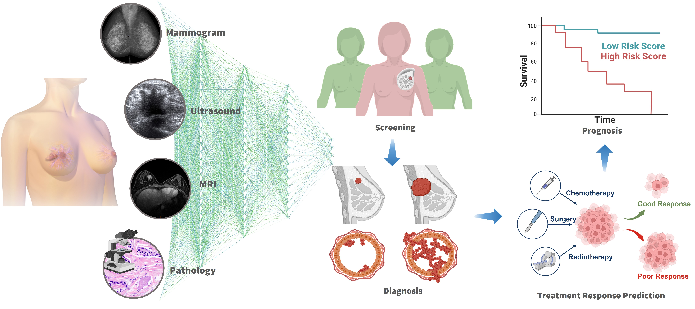

Luyang LuoPost-doctoral Fellow
Rm 2602, Academic Building, 


|
 |
Biography
I am currently a post-doctoral fellow in the CSE department, HKUST, working with Prof. Hao Chen. Before that, I obtained my Ph.D. degree from the CSE department, CUHK, advised by Prof. HENG Pheng-Ann and Prof. WONG, Tien-Tsin. Previously, I obtained my B.Sc. degree from the CSE department, CUHK.
My research interest majorly focuses on developing efficient and trustworthy deep learning algorithms for medical data analysis. Currently, I am particularly interested in developing and applying foundation models for multimodal biomedical data analysis.
News
- [11/2024] One paper on Omni-supervised Learning was accepted by TMI.
- [12/2023] One paper on XAI for skin lesion was accepted by AAAI 2024.
- [08/2023] Proceedings of TML4H 2023 was officially online.
-
[06/2023] Two papers were accepted by MICCAI 2023, one of which was
early accepted
. - [05/2023] I have been serving as a guest editor for the IEEE JBHI SI on Trustworthy Machine Learning for Health Informatics.
- [04/2023] Our survey on Deep Learning in Breast Cancer Imaging can be found on arxiv.
- [02/2023] One paper was accepted by MedIA.
- [01/2023] I have been serving as the co-chair of the first ICLR 2023 workshop on TML4H.
- [06/2022] I passed my oral defense and became a Ph.D.
-
[05/2022] Two papers were
early accepted
by MICCAI 2022. -
[01/2022] Our ISBI2022 paper on semi-supervised cervical cancer cell detection was selected as
Oral Presentation
. -
[08/2021] Our MICCAI2021 paper on semi-supervised COVID-19 lesion segmentation was selected as
Oral Presentation
. - [06/2021] One paper on omni-supervised Chest X-ray disease detection was accepted by MICCAI.
-
[05/2021] One paper on semi-supervised COVID-19 lesion segmentation was
early accepted
by MICCAI. - [06/2020] One paper on learning from imperfect multi-site ChestX-ray data was accepted by IEEE TMI.
- [05/2020] One paper on semi-supervised learning was accepted by IEEE TMI.
- [02/2020] Two papers accepted by MedIA and IEEE JBHI, respectively.
-
[08/2019] One paper on OCT glaucoma screening was accepted by The Lacent Digital Health and selected as the
Cover Page
. -
[06/2019] Two papers were
early accepted
by MICCAI.
Selected Publications [Google Scholar]
|
 |
Deep Learning in Breast Cancer Imaging: A Decade of Progress and Future Directions Luyang Luo, Xi Wang, Yi Lin, Xiaoqi Ma, Andong Tan, Vince Vardhanabhuti, Winnie CW Chu, Kwang-Ting Cheng, Hao Chen Major Revision, 2023. |

|
Deep Omni-supervised Learning for Rib Fracture Detection from Chest Radiology Images Zhizhong Chai, Luyang Luo*, Huangjing Ling, Pheng-Ann Heng, Hao Chen TMI, 2024. |

|
Scale-aware Super-resolution Network with Dual Affinity Learning for Lesion Segmentation from Medical Images Yanwen Li, Luyang Luo*, Huangjing Ling, Pheng-Ann Heng, Hao Chen Under Major Revision, 2023. |

|
Rethinking Annotation Granularity for Overcoming Shortcuts in Deep Learning–based Radiograph Diagnosis: A Multicenter Study Luyang Luo, Hao Chen, Yongjie Xiao, Yanning Zhou, Xi Wang, Varut Vardhanabhuti, Mingxiang Wu, Chu Han, Zaiyi Liu, Xin Hao Benjamin Fang, Efstratios Tsougenis, Huangjing Lin, Pheng-Ann Heng Radiology: Artificial Intelligence, 2022. |

|
Pseudo Bias-Balanced Learning for Debiased Chest X-ray Classification Luyang Luo, Dunyuan Xu, Hao Chen, Tien-Tsin Wong, Pheng-Ann Heng. International Conference on Medical Image Computing and Computer-Assisted Intervention (MICCAI), 2022. (Early Accept) |

|
OXnet: Deep Omni-supervised Thoracic Disease Detection from Chest X-rays Luyang Luo, Hao Chen*, Yanning Zhou, Huangjing Lin, Pheng-Ann Heng. International Conference on Medical Image Computing and Computer-Assisted Intervention (MICCAI), 2021. [code] |

|
Dual-Consistency Semi-Supervised Learning with Uncertainty Quantification for COVID-19 Lesion Segmentation from CT Images Yanwen Li, Luyang Luo*, Huangjing Lin, Hao Chen, Pheng-Ann Heng. International Conference on Medical Image Computing and Computer-Assisted Intervention (MICCAI), 2021. (Oral) [code] |

|
Deep Mining External Imperfect Data for Chest X-ray Disease Screening. Luyang Luo, Lequan Yu*, Hao Chen, Quande Liu, Xi Wang, Jiaqi Xu, Pheng-Ann Heng. IEEE Transactions on Medical Imaging (IEEE TMI), 2020. |

|
Deep Angular Embedding and Feature Correlation Attention for Breast MRI Cancer Analysis Luyang Luo , Hao Chen, Xi Wang, Qi Dou, Huangjing Lin, Juan Zhou, Gongjie Li, Pheng-Ann Heng Medical Image Computing and Computer Assisted Intervention (MICCAI), 2019. (Early Accept) |

|
Weakly Supervised 3D Deep Learning for Breast Cancer Classification and Localization of the Lesions in MR Images. Juan Zhou, Luyang Luo*, Qi Dou, Hao Chen, Cheng Chen, Gong‐Jie Li, Ze‐Fei Jiang, Pheng‐Ann Heng. Journal of Magnetic Resonance Imaging (JMRI), 2019. |

|
Detection of Glaucomatous Optic Neuropathy with Spectral-domain Optical Coherence Tomography: A Retrospective Training and Validation Deep-learning Analysis. An Ran Ran, Carol Y Cheung, Xi Wang, Hao Chen, Luyang Luo, Poemen P Chan, Mandy OM Wong, Robert T Chang, Suria S Mannil, Alvin L Young, Hon-wah Yung, Chi Pui Pang, Pheng-Ann Heng, Clement C Tham. The Lancet Digital Health, 2019. (Cover Page) [news] |
Academic Services
-
Editor:
“Trustworthy Machine Learning for Healthcare”, TML4H 2023, Proceedings. [Editor]
IEEE J-BHI Special Issue on “Trustworthy Machine Learning for Health Informatics” [Guest Editor]
-
Program Chair&Meta Reviewer:
ICLR 2023 workshop on TML4H
ICCV CVAMD 2023
4th International Workshop on MMMI
-
Conference Reviews:
MICCAI 2023, 2022, 2021
CVPR 2024
AAAI 2024, 2022
ISBI 2022
-
Journal Reviews:
IEEE Transactions on Medical Imaging (TMI)
Medical Image Analysis (MedIA)
IEEE Transactions on Image Processing (TIP)
IEEE Journal of Biomedical and Health Informatics (IEEE JBHI)
Scientific Reports
Medical Physics
Journal of Magnetic Resonance Imaging (JMRI)
Expert Systems With Applications (ESWA)
IEEE Access
Frontiers in Artificial Intelligence
Frontiers in Big Data
Frontiers in Radiology
Supervised Students
| Jiaxin Zhuang (PhD at HKUST) |
| Yequan Bie (PhD at HKUST) |
| Dunyuan Xu (Msc at CUHK -> PhD at CUHK) |
| Minghao Wang (Msc at HKUST -> PhD at HKUST) |
| Hongyi Wang (PhD at Zhejiang University) |
| Yifeng Wang (Master at THU) |
Teaching
| 2020-2021 | Fall | Fundamental Computing with C++ (CSCI 1540) |
| 2019-2020 | Spring | Computer Principles and C Programming (CSCI 1510) |
| 2019-2020 | Fall | Digital Logic and Systems (ENGG 2020) |
| 2018-2019 | Fall | Digital Logic and Systems (ENGG 2020) |
© Luyang Luo | Last updated: August 2023